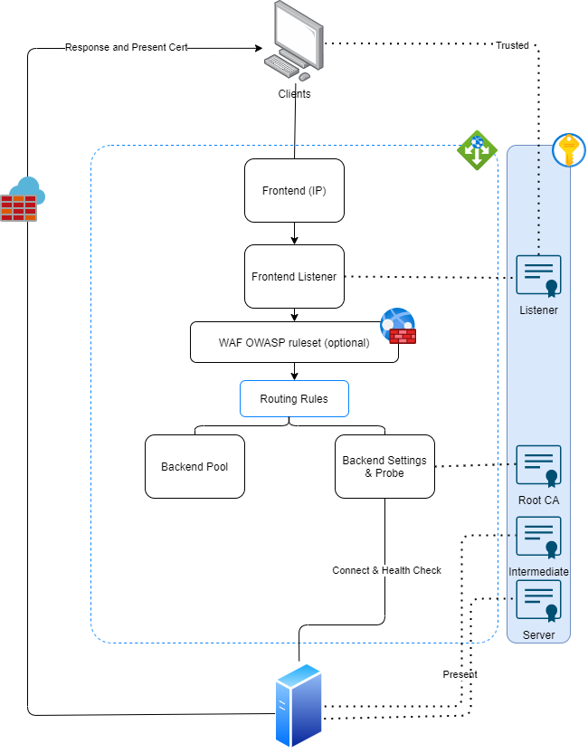

Certificates¶
Intro¶
This page is an introduction of how certificates setups work
Basic Concept¶
Crypotgraphy:
- Asymetric Keys: The cryptographic scheme that supports two different keys
- Public Key: the certificate itself
- Private Key: the key that is associated with the certiciate
- encrypt: Alice uses Bob's public key to write a msg, Bob uses Bob's private key to decrypt the msg
- sign: Alice uses Alice's private key to write the msg, Bob uses Alice's public key to cal. and verify hash
Self-signed certificate¶
A self signed certificate is simply a certificate that is not issued by a certificate authority but itself. This can be created either via Terraform
resource "tls_private_key" "server_pem" {
algorithm = "RSA"
rsa_bits = 2048
}
resource "tls_self_signed_cert" "server_crt" {
private_key_pem = tls_private_key.server_pem.private_key_pem
dns_names = ["example.com"]
is_ca_certificate = true
subject {
common_name = "example.com"
organization = "Example, Inc."
}
validity_period_hours = 24
}
or use openssl command:
openssl req -x509 -newkey rsa:2048 \
-keyout key.pem \
-out cert.pem \
-sha256 \
-days 3650 \
-nodes \
-subj "/C=XX/ST=StateName/L=CityName/O=CompanyName/OU=CompanySectionName/CN=CommonNameOrHostname"
Locally Signed Certificate with Private CA¶
Unlike a single self-signed certificate, you can setup your own private root CA (which is a self-signed cert by its own), and use that to sign arbitrary server certs as you need.
This way, the client only need to trust one root CA to verify the rest of server certs. Certain technology also only allows private certificate issued by a private CA (e.g. Azure Application Gateway)
Use Terraform:
resource "tls_private_key" "root_pem" {
algorithm = "RSA"
rsa_bits = 2048
}
resource "tls_self_signed_cert" "root_crt" {
private_key_pem = tls_private_key.root_pem.private_key_pem
is_ca_certificate = true
dns_names = ["example.com"]
subject {
common_name = "example.com root CA"
organization = "Example, Inc."
}
validity_period_hours = 24
}
resource "tls_private_key" "server_pem" {
algorithm = "RSA"
rsa_bits = 2048
}
resource "tls_cert_request" "server_cer" {
private_key_pem = tls_private_key.server_pem.private_key_pem
dns_names = ["mysubdomain.example.com"]
subject {
common_name = "mysubdomain example"
organization = "Example, Inc."
}
}
resource "tls_locally_signed_cert" "server_crt" {
cert_request_pem = tls_cert_request.server_cer.cert_request_pem
ca_private_key_pem = tls_private_key.root_pem.private_key_pem
ca_cert_pem = tls_self_signed_cert.root_crt.cert_pem
subject {
common_name = "mysubdomain example"
organization = "Example, Inc."
}
validity_period_hours = 12
}
or use openssl commands:
openssl genpkey -algorithm RSA -out root.key -aes256
openssl req -x509 -new -nodes -key root.key -sha256 -days 3650 -out root.crt
openssl genpkey -algorithm RSA -out server.key -aes256
openssl req -new -key server.key -out server.csr
openssl x509 -req \
-in server.csr \
-CA root.crt \
-CAkey root.key \
-CAcreateserial -out server.crt -days 365 -sha256 -extfile v3.ext
Intermediate Cert and Cert Chain¶
Instead of Root certificate, a server cert can be signed by an intermediate cert instead, and the intermediate cert is signed by either the root cert or an upper intermediate cert.
Ulltimately, this keeps the Root cert safe as revoking a Root cert is a lot more work than revoking an intermediate cert:
- Need to update machine clients (browser, OS) to trust such certificate
- All child certificates become not trustable
Server needs to present:
-----BEGIN CERTIFICATE-----
content of your server certificate
-----END CERTIFICATE-----
-----BEGIN CERTIFICATE-----
content of any intermediate CA certificate
-----END CERTIFICATE-----
In some case, such as Strimzi Kafka, it would require you to present the whole chain instead:
-----BEGIN CERTIFICATE-----
content of your server certificate
-----END CERTIFICATE-----
-----BEGIN CERTIFICATE-----
content of any intermediate CA certificate
-----END CERTIFICATE-----
-----BEGIN CERTIFICATE-----
content of the root CA
-----END CERTIFICATE-----
For the client itself, all you need is to add the cert to truststore, e.g. :
keytool -import -keystore ./cacerts -trustcacerts -file cacert.pem -storepass changeit
HTTPS termination¶
For L7 loadbalancer that supports:
- TLS termination (traffic is decrpyted and send over to Server), or
- end-to-end TLS encryption (traffic is decrypted and re-encrypted with new connection)
such as Azure Application Gateway, 
you will need to provide a trusted root certificate to the backend, whilst the server will hold the intermediate & server cert, as intended